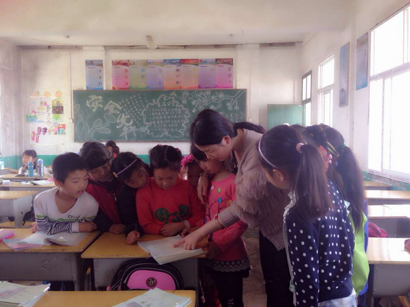

关于我们
2017年4月11日
——一群扎根基层的教育工作者

作为一所地方高等师范院校，淮南师范学院一直有这样一种办学情怀和追求。我校29名大学生大胆实践和勇于探索，形成了创新创业教育模式——炎刘模式：心系贫困地区基础教育，主动服务国家扶贫战略，在艰苦环境中锻炼成长，践行立德树人大学宗旨。
29名大学生的支教扶贫活动就是用实际行动诠释了这种情怀和追求。在安徽省教育工委、教育厅、寿县县委政府和教育局的指导关心下，在炎刘镇党委政府和学区管委会的“精心谋划、悉心安排、倾心关爱”下， 29名同学以“融入学校、投入教学、深入农村”的实际行动，取得了三个方面的实际成效：
一是教育扶贫不仅解决了农村学校教师短缺的问题，更深刻改变的是农村学校的面貌；二是教育扶贫不仅解决了农村学校教学问题，更深刻改变的是农村的教育问题；三是教育扶贫改变的不仅是教育教学本身的问题，更深刻改变的是农村的生活方式。
淮南师范学院应用型办学定位明确，教师教育改革扎实推进，精准扶贫行之有效。在解决农村师资队伍薄弱这个制约城乡教育均衡发展的关键问题上，既优化了农村学校师资结构、促进教育教学质量逐步提高，又使一大批年青教师得以锻炼成长。他强调，淮南师范学院用“炎刘模式”培养新一代师资的做法富有创造性、效果显著，受到各方面的欢迎，取得了很好的经验，星火燎原，应该在全省推广。
精准扶贫 顶岗支教的“炎刘模式”为深化师范院校的教学改革，立德树人，加强思想政治工作，增强大学生的社会责任感，解决贫困地区教师队伍建设问题，提供了实践经验，很值得进一步总结推广。